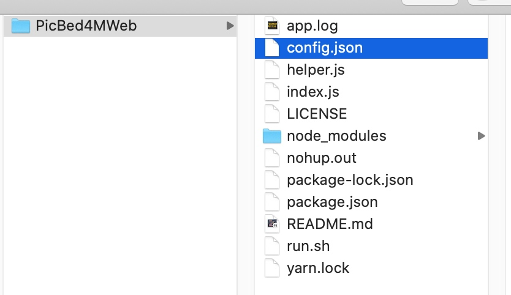
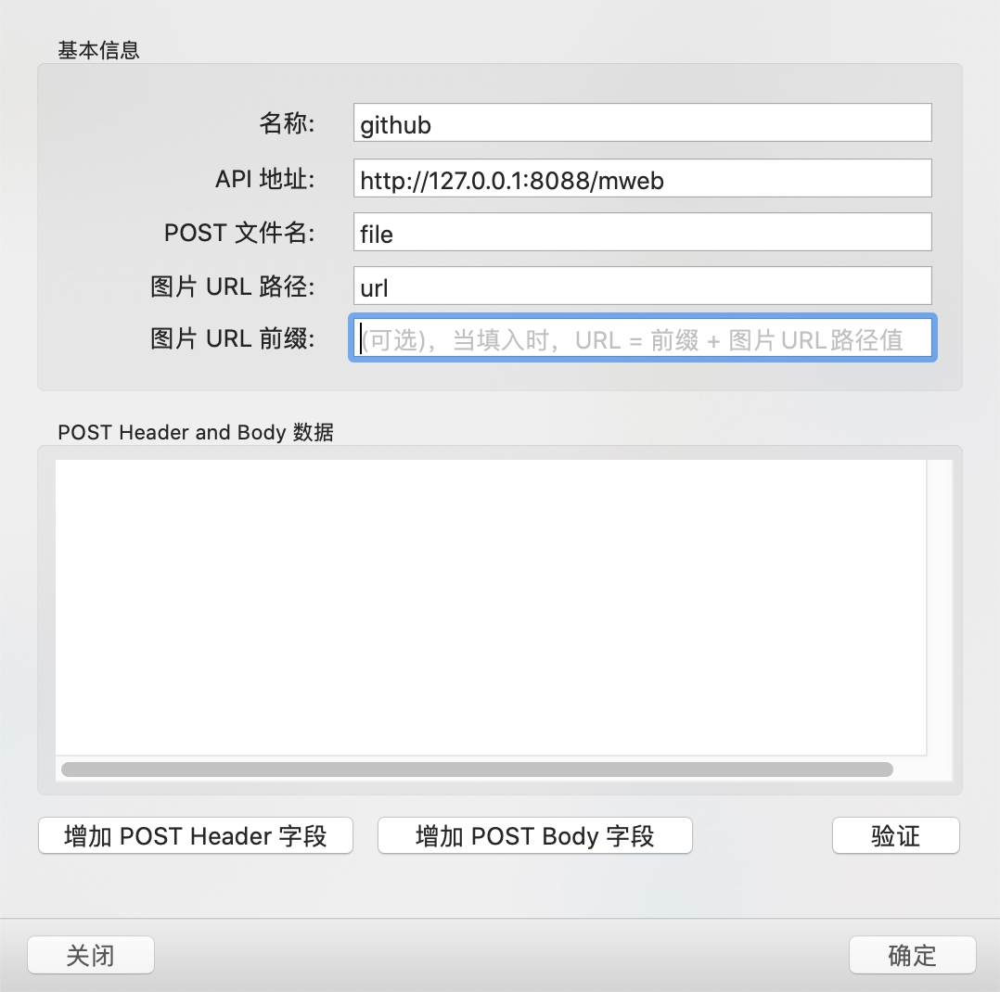
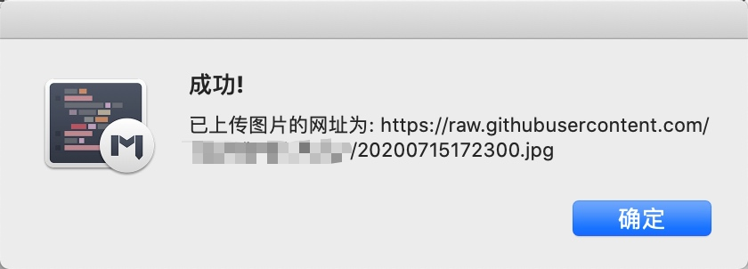

需求
自己写文章一直使用的是MWeb，上传图片的话一直使用的是自带的图片发布服务，使用的七牛的图床，并且开启了https，之前的话，博客的流量比较低，图片不多，所以七牛图床产生的费用不多，前段时间突然收到七牛的账单邮件，发现已经欠费了，因为https的流量是没有免费额度的，所有流量大了之后，再加上后续的文章图片多，导致费用很高，想想真的没必要，就把https取消换成了http。
用了一段时间发现，产生的费用是低了，不过想了想要不把图床换成github得了，方便，免费，还能备份，就使用了picgo这个软件来上传图片，后续的两篇文章图片比较少，还没什么大问题，后来有一篇文章的图片超过15张了，就发现这个方式真的太麻烦了，但是MWeb本身是不支持GitHub作为图床的。我就Google了一下，发现了PicBed4MWeb这个项目，算是比较好的解决了我的问题，下面我就简单写一下使用方法。
过程
项目配置
- 下载项目到本地目录
git clone https://github.com/gaopeng-hz/PicBed4MWeb.git - 安装依赖
npm install - 修改项目目录中的config.json文件

参考如下
"repo": "gaopeng-hz/images", // 仓库名称
"token": "xxxx", // token，不能公开，获取方式参考上面那篇文章
"port": 8081, // node服务器监听端口，默认8080
"url": "/upload" // 服务上传url，默认/upload
- 项目目录下
node index.js启动项目 终端窗口不能关闭
### MWeb配置
打开MWeb设置界面-发布服务-图床-自定义

根据config填写完成
可以点击右下方的验证来查看上传服务是否正常
上传成功为下图

正常上传
- 后台运行
nohup node index.js & - 开机启动
- 项目目录新建run.sh文件添加以下内容
#!/usr/bin/env bash
# 修改成自己的目录
nohup node /你的路径/PicBed4MWeb/index.js &
- 文件赋权
sudo chmod 777 run.sh - run.sh文件打开方式修改为终端
- 添加开机启动
系统偏好设置-用户与群组-登录项-添加run.sh文件即可
拓展内容
lsof -i :8100 查询端口
kill -9 PID 关闭进程，PID替换为查询的
ps | grep index.js 查询服务PID